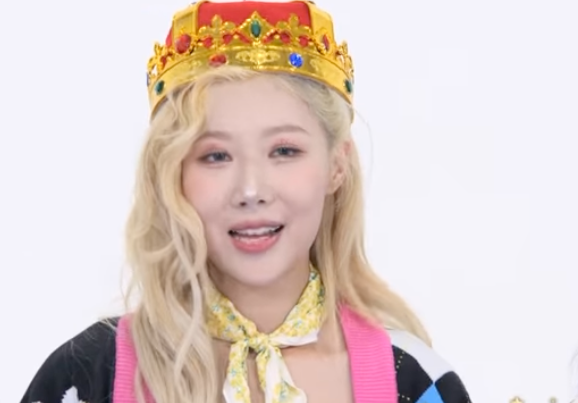
Not too bring too much sports dad energy, but I’m so proud of Handong’s domination of the tug of war competition in Dreamcatcher Mind, Episode 5 that I decided to provide this analysis of each match in the competition.
I think going in many of us would have JiU as our top competitor due to her height and strength with SuA as the dark horse contender due to her competitve spirit and strong, agile main dancer core. Or maybe that's just me.
I certainly did not predict Handong winning—being competitive, for sure—but not winning, especially as comprehensively as she did.
Here's how the competition played out.
Match 1: JiU vs. Yoohyeon
Yoohyeon has a fast start, but JiU goes to ground and uses her leverage and power to pull Yooh back from the candy tray. Yooh attempts to put up a fight, but JiU is too strong, and Yooh never regains a good footing. JiU then psychs her out with a commanding “Stay still!”, buying her time to get the candy and the win.
Match 2: SuA vs. Gahyeon
SuA gets off to a quick start, covering some good ground, and then ging to her knees, thus lowering her center of gravity and ensuring she maintains her balance. Gah just isn’t strong enough to pull back. It’s a fairly easy win for SuA.
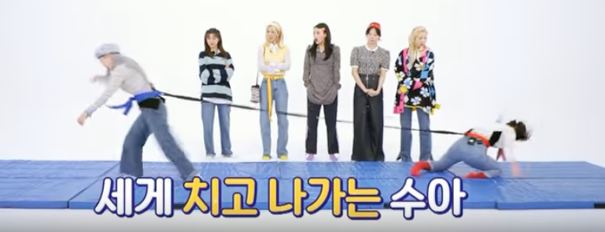
Match 3: Siyeon vs. Handong
Siyeon has no chance here. Handong simply bursts out of the start with power and speed. Siyeon tries to run forward, but she's still on her feet when the elastic snaps back with so much force it pulls Siyeon off her feet and she flies backward, landing flat on her back.
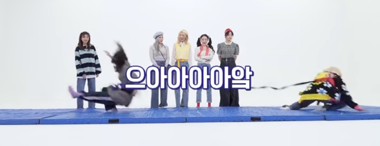
With her opponent out of commission, Handong easily crawls the remaining feet forward and has plenty of time to find a piece of candy. A stunning, speedy victory.
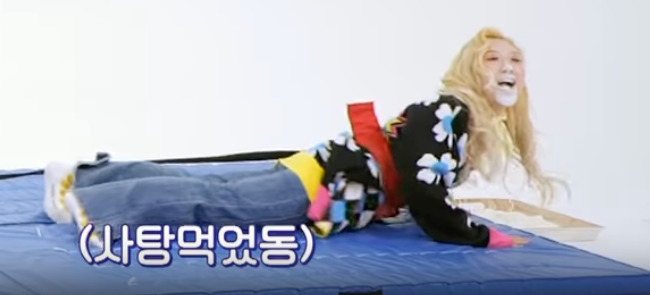
Match 4: Handong vs. Dami
This match is another quick win for Handong, but it’s actually an interesting one because Dami—big brain that she is—knows she needs to get off to a fast start and that she should quickly lunge forward and onto her knees to lower her center of gravity so she won't be thrown off her feet like Siyeon was.
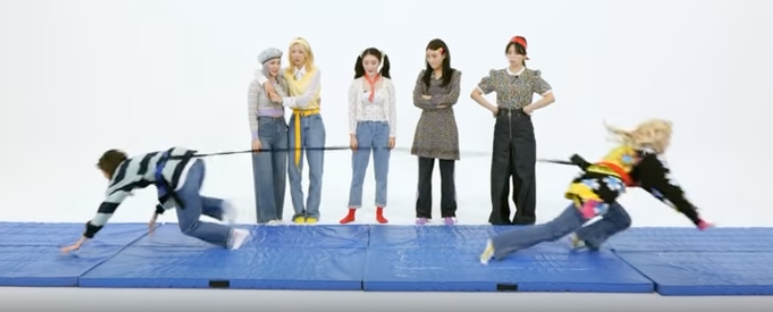
Dami executes her plan well but just doesn’t have the strength to compete with Handong. The recoil jerks her back, and she loses her balance. She tries to recover, but Handong simply drags Dami along the mat until she is in reach of the candy. As Dami says with a bemused awe in her voice: Dongie is a pillar.
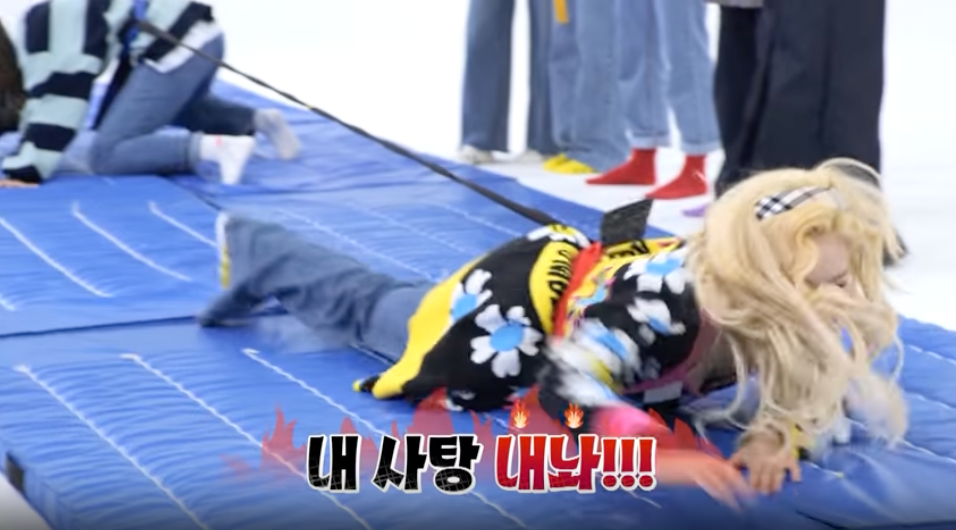
Match 5: JiU vs. SuA
Knowing JiU is taller and stronger, SuA uses the same strategy as Dami and goes to the mat early, trying to scrabble forward up on all fours like a monkey. JiU resists but SuA makes a valiant effort, which knocks JiU—who has stayed up on her feet thus far—off balance and onto the mat where she rolls onto her side. It looks like she’s given up. SuA seems sure to win.
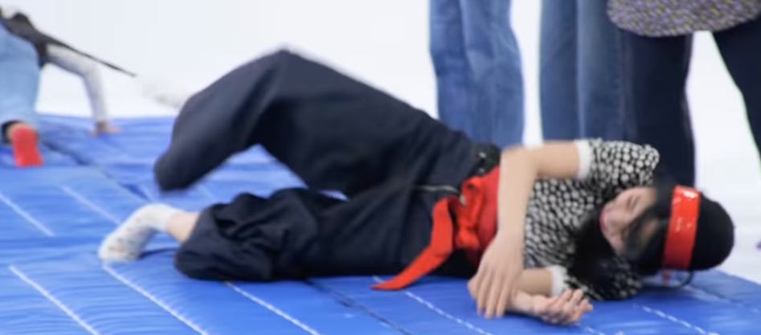
But the other members cheer their leader on, and JiU gets back up on her hands and knees and begans to crawl towards her side of the mat. SuA tries to hold tight but is no match for the charisma bunny leader's strength. JiU claws her way to the candy tray. SuA keeps struggling, trying to pull JiU back, but JiU holds her position long enough to get the candy.
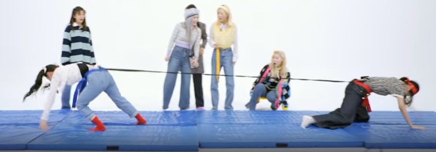
Championship Match: JiU vs. Handong
The heavyweight title. It seems like they should be somewhat evenly matched. But as competitive as JiU has been thus far, she doesn’t have the killer instinct Handong has and doesn’t quite understand the strategy like Dami and SuA did. They both dart forward.
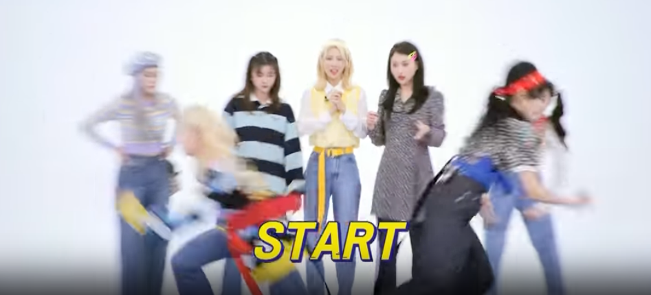
But Handong goes harder and is faster to her mark. She lunges forward and goes down to her knees. JiU has gone down to her knees by this time, but she hasn’t covered as much ground and didn’t lunge with that much power and so has little forward momentum. The elastic snaps her back; she loses her balance.
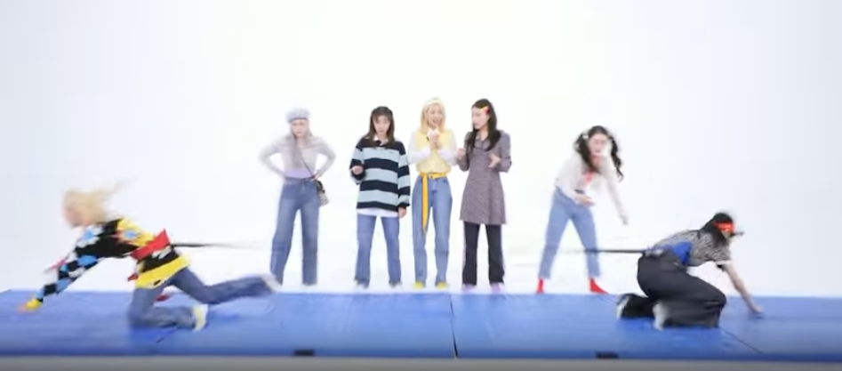
Not only that, but Handong has pulled with enough power that JiU is dragged onto her back. It's not quite as dramatic as Siyeon’s defeat, but it's a bit unexpected considering the strength JiU has shown in the previous matches. Handong now has a brief window to find the candy before JiU can start her counterattack. Handong pounces on the tray and quickly finds a piece of candy. The match is over before JiU can really get into it.
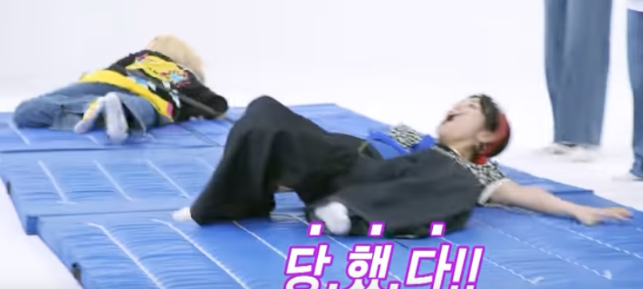
Note also that Handong's and JiU’s wins all came at the right side of the mat. Handong has an advantage here in that the tray on her side still has lots of candies in it. But she attacks that advantage with ferocity and without hesitation, and then caps it with her savage wit: when JiU kneels up and turns towards Handong and says her name in amazement, Handong shrugs and says, "Is it done?" Meaning, as I read it: is it over already?
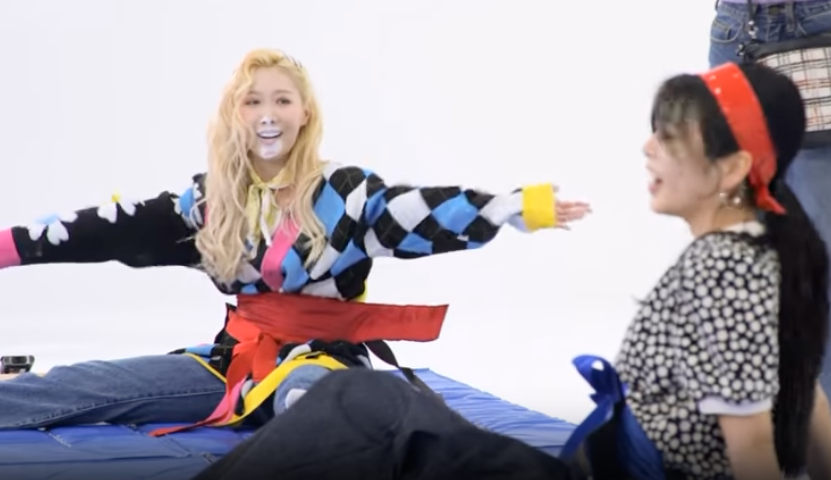
A Final Note
What an impressive performance by Handong. She shows balance, speed, power, and agility. Handong picks and chooses her moments to be sure. But when she strikes—whether it's with her legs and core or her tongue—she’s savage, unflinching, deadly.
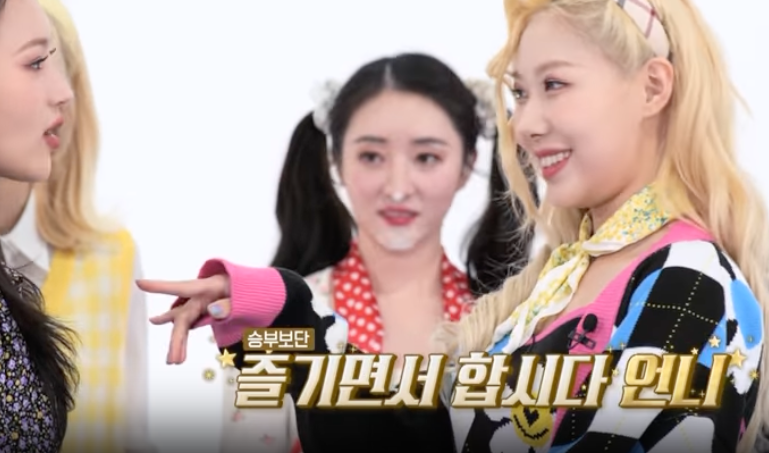
We’ve been seeing proof of Handong’s physical strength for awhile. There’s the various screencaps of her showing off her biceps, including the one from the TTS Twinkle stage during the Crossroads concert—not to mention the clips of her arm wrestling Yoohyeon. This performance on DC Mind may be the most dramatic of them all.
But my favorite example is still her jump during DC’s cover of My House.
Such grace, such power, such elegance. That's our Handong.
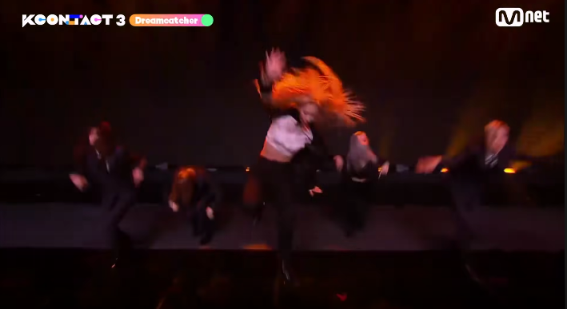